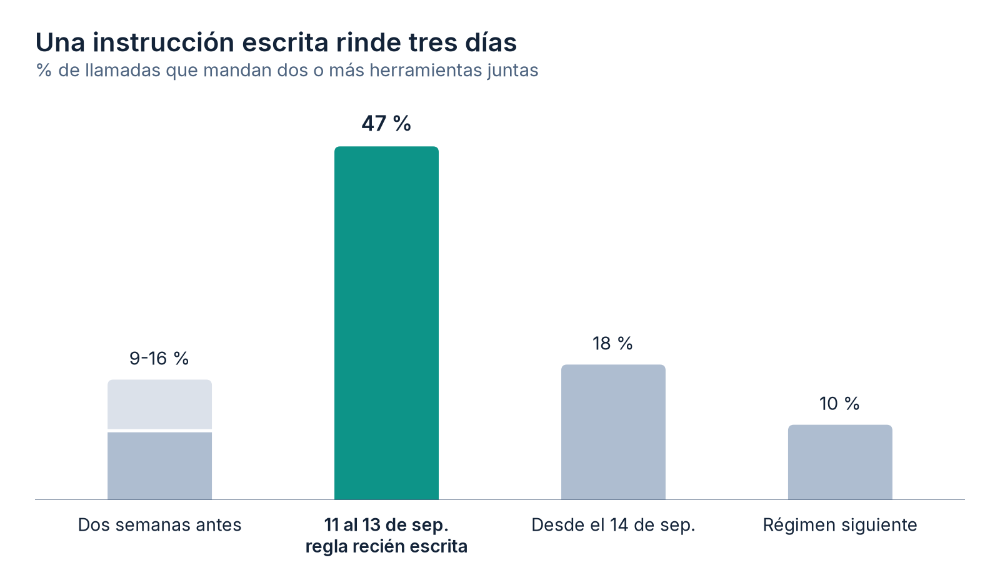
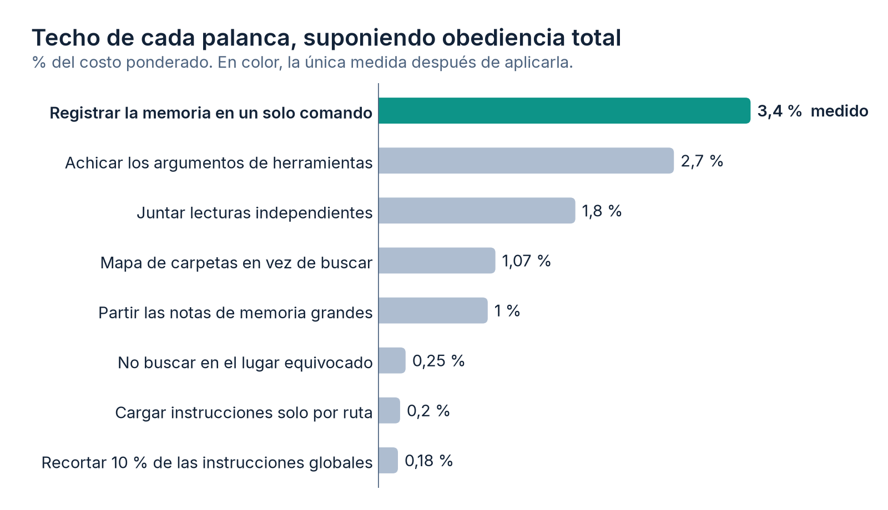
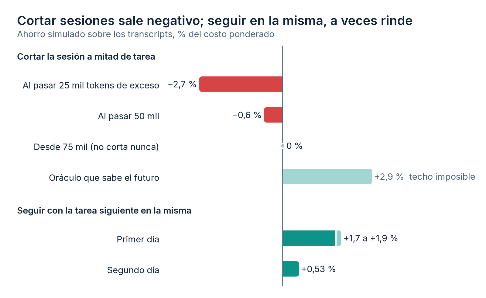

En el artículo anterior conté que el 94 % de lo que gastaba trabajando con un agente de código se iba en releer contexto, y cerré con cuatro hábitos para bajarlo. Después de publicarlo seguí midiendo. La idea era sencilla: tomar cada palanca que aparecía (en mis notas, en foros, en lo que hacen los proyectos de memoria para agentes), estimar cuánto podía rendir como máximo, aplicarla y medir de nuevo.
El resultado no es el que esperaba. Casi todas las palancas eran chicas. Varias no movieron nada. Un par salió negativa. Y la corrección más grande del mes no fue una técnica para ahorrar, sino un error en la vara con que medía todo lo demás.
Lo corto, para quien no tenga doce minutos
- Mis medidores contaban cada llamada 1,9 veces. Los totales del artículo anterior se parten por la mitad; sus conclusiones no cambian.
- Las palancas que quedaban después del primer diagnóstico rinden, casi todas, menos de 2 % del gasto. Abreviar y quitar tildes no rinden nada.
- Lo que sí rindió fue mecanismo (un hook, un comando que hace tres pasos en uno). Una regla escrita en las instrucciones del agente duró tres días.
- Con sesiones ya cortas, cortar sesiones sale negativo, y a veces conviene lo contrario: seguir en la misma.
Una nota sobre las unidades antes de seguir. Cuando digo «% del gasto» hablo de costo ponderado, no de volumen: cada tipo de token pesa según su precio relativo en la API, con el input en 1, el output en 5, la lectura de caché en 0,1 y la escritura de caché en 2 (a una hora) o 1,25 (a cinco minutos). El volumen dice cuánto se releyó; el ponderado, cuánto pesa. Casi todo el volumen es lectura de caché y, aun así, es menos de la mitad del costo.
Primero hubo que arreglar la vara
A mediados de mes, revisando ocho días de consumo, los totales no me calzaban con el
número de llamadas. La causa era trivial y llevaba semanas ahí. Claude Code escribe en el
transcript una línea por cada bloque de la respuesta (el texto, cada llamada a herramienta) y
repite en todas el mismo bloque usage. Mis scripts sumaban líneas. Cada llamada
contaba, en promedio, 1,9 veces.
La corrección fue agrupar por requestId y contar una vez. Esos ocho días pasaron
de reportar 1.003 millones de tokens a 540 millones. El arrastre de los resultados de
herramientas cayó casi a la mitad, porque también los turnos posteriores se contaban doble.
Eso toca al artículo anterior. Sus cifras absolutas se calcularon con los scripts viejos. Con la misma ventana y el conteo corregido, las 313 sesiones quedan en 294, los 2.356 millones de tokens quedan en 1.212, la relectura sube de 94 % a 96 %, el exponente de la curva pasa de 1,20 a 1,19 y leer archivos completos sigue siendo el 55 % del arrastre. Los totales se partieron por la mitad; la forma del argumento no se movió. Lo aclaro aquí porque esas cifras siguen publicadas, y el repositorio ya imprime las corregidas.
La segunda corrección de la vara vino por otro lado. Para estimar cuánto pesaban las notas de memoria del agente convertía caracteres a tokens con la regla que circula, unos 3,5 caracteres por token. Calibrado contra mis propios datos (el salto de contexto entre dos llamadas consecutivas, que es exactamente lo que se agregó), el modelo daba 2,1 caracteres por token en prosa en español. Con eso, la memoria no pesaba 7 % del gasto, como había calculado, sino 10 %.
Ninguna de las dos correcciones cambió una conclusión. Las dos cambiaron cuánto se podía ganar con cada palanca, que es lo único que sirve para decidir en cuál trabajar.
Medir el régimen, no el histórico
El segundo error fue más sutil. Cuando uno cambia algo en la configuración del agente (una instrucción, un hook, un script de lectura), el promedio de los últimos 45 días mezcla dos regímenes y no describe ninguno.
Me pasó con las notas de memoria. Sobre el histórico, el diagnóstico era claro: casi la mitad de lo que se leía de ellas era historia acumulada que no hacía falta, y la solución obvia era partir cada archivo en dos, uno con el estado vigente y otro con la historia. Pero tres días antes había cambiado la forma de leerlas. En vez de abrir el archivo entero, el agente pedía primero un mapa de secciones con el costo de cada una y después traía solo la que servía. Medido solo desde ese cambio, hubo 2 lecturas enteras contra 198 por mapa o por sección, y el desperdicio de esa escalera frente a haber leído el archivo completo en esa misma sesión fue de 1 %. Partir archivos habría sido trabajo con retorno cero.
Desde entonces todos los medidores aceptan --desde y --hasta con
hora, y cortan por llamada, no por sesión. Con los dos se puede aislar un régimen que ya
terminó y compararlo con el siguiente. Y hay un script aparte, regimen.py, que
avisa arriba de las cifras cuando la ventana cruza un cambio de configuración.
La primera vez que lo usé para verificar un cambio, la estimación falló por los dos lados. Había aplicado tres recortes juntos. Uno de ellos, registrar las notas de memoria al cerrar la sesión con un solo comando en vez de leer y editar varios archivos, lo había estimado en 0,9 puntos del gasto; rindió 3,4 (la escritura de memoria bajó de 4,5 % a 1,1 %). Otro, achicar a un tercio el archivo de instrucciones de un proyecto, prometía unos 8 mil tokens menos por llamada y dio 6 mil, con cuatro sesiones antes y tres después. Y el total bajó 26 %, que no le puedo atribuir a nada: la ventana nueva tenía diez sesiones largas contra 35 cortas en la anterior. Lo único que se sostiene al comparar ventanas tan distintas es lo que se mide por llamada y por sesión sobre las piezas que el cambio tocó.
Lo que rindió fue mecanismo, no texto
Las mejoras grandes del mes tienen algo en común: ninguna depende de que el agente se acuerde de algo. Son código que se ejecuta solo.
La escalera de costos. El problema concreto era una nota de memoria de 564 líneas, unos 10 mil tokens, con 29 secciones. Ante una pregunta puntual sobre una de ellas, la única salida realista era abrirla entera. Se agregaron dos opciones al lector: una que lista las secciones con su rango de líneas y lo que cuesta cada una, sin leer ninguna (unos 700 tokens), y otra que trae una sola sección (unos 740). El principio que quedó es que el costo se ve antes de pagarlo, y que cada escalón vale más o menos un décimo del siguiente.
El bloqueo de relecturas. Al auditar un mes de lecturas de memoria, el 47 % eran del mismo archivo en la misma sesión: texto que ya estaba en el contexto. Se resolvió con un hook que deniega la segunda lectura completa del mismo archivo. Es el único bloqueo que no puede perder información, porque lo que bloquea ya está cargado.
El ruteo. Un hook sugiere, en cada mensaje, qué notas de memoria podrían servir. Antes comparaba el mensaje contra líneas de disparadores escritas a mano; ahora corre un BM25 contra el cuerpo de las notas y contra los tres mensajes anteriores de la sesión. Para saber si funcionaba armé un banco con los propios transcripts: por cada mensaje mío, qué notas se abrieron de verdad para responderlo. Sobre los casos donde el ruteo es el único camino, el acierto entre las cuatro primeras sugerencias pasó de 41 % a 76 %, con la mitad de tokens por mensaje. El número me pareció demasiado bueno, así que conté solo las notas que todavía no estaban en el contexto (sugerir una ya abierta no ahorra nada): 68 % contra 43 %. La ventaja no venía de repetir lo ya leído.
Ese banco corrigió además una cifra que yo daba por firme. Había escrito que ningún ruteo por palabras podía pasar de 70 % de acierto, porque casi un tercio de los mensajes no trae con qué buscar («revisa que haya quedado todo bien»). Lo había medido mirando cada mensaje solo. Con los dos anteriores al lado, muchos de esos mensajes sí tienen con qué buscar, y el ruteo instalado pasa ese supuesto techo. Dónde está el techo real, no lo sé.
Y una cosa que decidí no hacer. Catorce notas no se habían abierto nunca en 393 sesiones, y la poda parecía obvia. Mirándolas una por una, «nunca abierta» no era «redundante»: dos estaban en el índice que se carga siempre y funcionan justamente sin abrirse, y varias guardaban reglas que no estaban escritas en ninguna otra parte. No se habían abierto porque el tema no había salido. Borrarlas era perder conocimiento para ahorrar tokens que, mientras no se abran, no cuestan nada.
Las reglas escritas se sueltan
La otra cara de lo anterior. Cada llamada a la API relee el contexto entero, así que una llamada de más cuesta más que casi cualquier archivo. Medí cuántas llamadas hacía el agente por cada mensaje mío y escribí en sus instrucciones una regla explícita: encadenar en un mismo comando lo que no depende de un resultado previo, y lanzar juntas las herramientas independientes.
Diez días después, las llamadas por mensaje no habían bajado. Se habían duplicado.
| Ventana | Media por sesión | Mediana | Global |
|---|---|---|---|
| Antes de la regla | 18,2 | 13,5 | 14,6 |
| Diez días con la regla escrita | 24,3 | 19,5 | 23,0 |
| Régimen siguiente | 32,7 | 27,0 | 29,2 |
Ese número engaña un poco. Los mensajes por sesión habían caído de 1,7 a 1,1: yo estaba mandando tareas más largas en un solo mensaje. Llamadas por mensaje mide el tamaño de la tarea tanto como la disciplina, así que sirve de alarma y no de veredicto. Lo comparable es la conducta que la regla pedía. Los comandos de shell con dos o más pasos encadenados eran 84-87 % antes de escribirla y 86 % después: ya venían encadenados. Y las llamadas con más de una herramienta subieron a 47 % en los tres días siguientes a escribir la regla, para volver a 18 % y después a 10 %. Tres días buenos y se soltó. Ya me había pasado lo mismo con otra regla unas semanas antes.

Probé también el mecanismo inverso: sacar instrucciones del archivo que se carga siempre y
dejarlas en un archivo que Claude Code carga solo cuando se trabaja sobre ciertas rutas
(.claude/rules/ con paths:). Funciona, pero lo dispara solo la lectura
o edición con las herramientas de archivo. Si el agente lee por shell, no carga. En un mes, de
las sesiones que tocaron esa carpeta, en el 78 % la regla no habría entrado. Sirve para guías de
consulta atadas a archivos que se editan, nunca para una regla que no se puede romper.
La conclusión que saqué: una instrucción escrita rinde lo que rinde en sus primeros días, y después vuelve la conducta de siempre. Si algo importa, va como mecanismo (un hook que bloquea, un comando que hace tres pasos en uno), no como otra línea de instrucciones.
La tabla de las palancas chicas
Esto es lo que midió el resto del mes. La columna del techo supone obediencia total, que no existe. La del costo es lo que se paga por intentarlo.

| Palanca | Techo | Lo que cuesta o lo que pasó |
|---|---|---|
| Juntar en una llamada las lecturas independientes | 1,5-1,8 % | Un aviso tras cada lectura suelta cuesta 0,25 % y empata recién con 15 % de obediencia. |
| Achicar los argumentos de herramientas (scripts largos, archivos escritos enteros) | 2,7 % | Es el total de todos los argumentos. La regla «editar en vez de reescribir» toca ~0,1 %. |
| Cargar instrucciones solo por ruta | 0,2 % | No carga si el agente lee por shell. |
| Recortar el archivo de instrucciones global | 0,18 % por cada 10 % | Se descartó. |
| Partir las notas de memoria grandes | ~1 % | La escalera ya lo había resuelto. |
| No buscar en el lugar equivocado (otra casilla, otra carpeta) | 0,25 % | Es un piso. Se justifica por calidad, no por tokens. |
| Localizar archivos con un mapa de carpetas en vez de buscar | 1,07 % | Incluye las búsquedas que eran necesarias. |
| Abreviar las instrucciones | 0 | 4,8 % menos caracteres, 0,6 % más tokens. |
| Escribir sin tildes ni eñes | 0 | 1 % más tokens. |
| Bajar el caché de una hora a cinco minutos | no aplica | Con suscripción, la hora ya es el default. |
Lo de abreviar merece una línea más, porque es la pregunta que más me hacen. El tokenizador corta por piezas de vocabulario, no por letra. «Que», «memoria» o «después» ya eran un token; «q», «mem» o «dsp» siguieron costando uno, y los signos raros («c/», «x») agregaron piezas. La forma acentuada correcta resultó ser la más frecuente en el vocabulario, por eso quitarle las tildes la encareció. Se recorta quitando contenido, no comprimiéndolo.
Y lo de buscar en el lugar equivocado lo cuento porque me sorprendió lo poco que pesaba. De 2.064 búsquedas en dos semanas fallaron 99, que etiqueté a mano una por una porque la clasificación automática confundía un reintento con otras palabras con un abandono. Las que fueron a la fuente equivocada (buscar un correo personal en la casilla del trabajo, sobre todo) sumaron 0,25 % del gasto, unas dos llamadas al día. Vale la pena corregirlo igual, pero porque concluir «no hay nada» mirando en el lugar equivocado es un error de contenido, no de costo.
Partir sesiones no paga (y aquí me contradigo)
En el artículo anterior la palanca número uno era abrir una sesión nueva al cambiar de tema. Un mes después, la medición dice que cortar a mitad de tarea sale negativo, y que a veces conviene lo contrario.
La cuenta es esta. Cortar obliga a volver a escribir en caché el prefijo de la sesión (las instrucciones, las definiciones de herramientas, lo que el agente necesita para arrancar), y escribir cuesta 2 donde leer cuesta 0,1. Lo que se ahorra es releer el exceso acumulado en cada llamada siguiente. Cortar conviene recién cuando ese exceso, multiplicado por las llamadas que quedan, pasa unas 19 veces el tamaño del prefijo. Con sesiones como las mías, casi nunca.
Lo simulé sobre los transcripts. La regla «cortar cuando el exceso pase de 25 mil tokens» dio -2,7 %; con 50 mil, -0,6 %; desde 75 mil ya no cortaba ninguna sesión. Un oráculo que corta en el mejor momento sabiendo el futuro y sin pagar el costo de reorientarse llegó a 2,9 %, y solo en cuatro sesiones.
Lo que sí rindió fue lo inverso: seguir con la tarea siguiente en la misma sesión cuando esta va liviana (menos de 20 mil tokens sobre el piso, misma carpeta, menos de una hora entre ambas). El primer día que lo medí daba +2,2 %. Después encontré que la simulación aceptaba juntar sesiones que en realidad habían corrido en paralelo, y sin ellas quedó en +1,7 a +1,9 %. El segundo día dio +0,5 %: ese día el trabajo ya venía encadenado en sesiones largas y casi no había dónde juntar.

No hay contradicción de fondo, hay un cambio de régimen. El primer artículo midió una época de sesiones de cientos de turnos, donde cortar ahorraba un tercio. El hábito funcionó: en el régimen que medí, 43 de 54 sesiones tuvieron un solo mensaje, con una mediana de 13 llamadas. Con sesiones así de cortas, el margen está del otro lado. Todavía no lo recomiendo: son dos días de regímenes distintos, describe y no recomienda, y no mide el otro costo de juntar temas, que es la calidad de lo que responde un agente con dos asuntos mezclados en el contexto.
La caché, con los precios que de verdad se pagan
En el régimen actual, la lectura de caché es el 46 % del costo ponderado y la escritura, el 36 %. La escritura pesa más de lo que parece porque se paga a precio doble: toda es a una hora. Quise probar bajarla a cinco minutos, que en la API cuesta 1,25 en vez de 2, y resultó que con suscripción la hora es el default del uso incluido. El sobreprecio de mi estimación era de la API, no de lo que se factura.
Partida por origen, la escritura fue 36 % arranque de sesión y 64 % contenido nuevo. Las reescrituras por caché vencido fueron cero en ese régimen. Y el arranque no es escribir el prefijo entero: la primera llamada lee unos 42 mil tokens de caché, que es el prefijo común entre sesiones y sobrevive incluso más de una hora sin actividad, y escribe unos 22 mil propios de la sesión. Aun así, el arranque pesa 14 % del costo, porque la mayoría de mis sesiones son cortas. Es la misma cuenta que hace negativo cortarlas.
Contra los pioneros
A mitad de mes revisé cómo resuelven la memoria los proyectos que más se citan: las guías de Anthropic sobre ingeniería de contexto y su herramienta de memoria, Manus (prefijo estable y el sistema de archivos como memoria), claude-mem (divulgación progresiva en tres capas), Letta (consolidación mientras el agente no trabaja) y Mem0 y Zep, cuyos benchmarks no se pueden reproducir de un arnés a otro.
La sorpresa fue que el sistema que había armado a punta de mediciones ya estaba a la par. El ruteo que sugiere, el mapa de secciones y la lectura de una sola sección son la misma divulgación progresiva de claude-mem, con el costo a la vista en cada escalón. Separar en cada nota un estado vigente que se reescribe y una historia que solo crece cumple lo que Zep hace con validez temporal. Descarté instalar cualquiera de ellos o una base vectorial: todos suman texto fijo al inicio de cada sesión, que es justo lo que se paga más veces, y el ruteo por palabras ya acertaba 75 %.
Y con la calibración de tokens corregida, la memoria completa (instrucciones, índice, lecturas, escrituras y ruteo) pesaba 10 % del costo, y lo recortable dentro de eso, entre 2,5 y 3 %. Se aplicó, y fue el lote del que hablé más arriba.
Qué medir, y con qué
Si algo quedó de este mes es el orden. Antes de aplicar una palanca: medir su techo con los propios transcripts, asumiendo obediencia total. Si el techo es chico, no vale la pena ni el texto que la explica. Si es grande, preferir un mecanismo a una instrucción. Y después de aplicarla, medir solo desde el momento del cambio.
Los scripts están en context-economy,
que ahora tiene seis. Leen los .jsonl que Claude Code deja en el disco y no mandan
nada a ninguna parte.
python medir_consumo.py --desde "2026-09-21 11:44"
python medir_tool_results.py --desde "2026-09-21 11:44" --top 25
python medir_paralelismo.py --desde "2026-09-21 11:44" --muestra pares.csv
python medir_juntar.py --desde "2026-09-21 11:44"medir_consumo.py da el gasto por sesión, con volumen y costo ponderado.
medir_tool_results.py ordena los resultados de herramientas por arrastre.
medir_paralelismo.py calcula el techo de juntar lecturas y deja una muestra para
revisar a mano cuánto se equivoca su heurística (en mi caso, bastante: de 30 pares que marcó
independientes, lo eran 12 y medio). medir_juntar.py simula seguir en la misma
sesión en vez de abrir otra. regimen.py corre dentro de los anteriores y avisa si la
ventana cruza un cambio de configuración.
Hay dos cifras de este artículo que no se pueden reproducir con ese repositorio: el acierto del ruteo y el costo de buscar en el lugar equivocado. Salen de dos scripts que dependen de mi lector de notas y de la estructura de mis carpetas, y publicarlos sería publicar algo que no corre en otra máquina. Lo que sí se puede rehacer es el método, que describí arriba: el banco del ruteo se arma con los transcripts propios (cada mensaje contra las notas que se abrieron de verdad para responderlo), y las búsquedas fallidas se detectan por resultado vacío y se clasifican a mano. Tampoco están en el repositorio las simulaciones de cortar sesiones ni la partición de la caché, que corrieron una vez sobre una ventana; la de juntar sesiones sí, porque la voy a repetir.
Estas cifras son de una persona y de su forma de trabajar, igual que en el artículo anterior. El mensaje que me llevo no depende de eso. Cuando el primer diagnóstico ya se aplicó, lo que queda por ganar es chico y está repartido, y la única manera de no gastar un mes en palancas de 0,2 % es saber cuánto rinde cada una antes de moverla.
Preguntas frecuentes
¿Por qué los scripts que suman el bloque usage de los transcripts dan el doble?
Porque Claude Code escribe una línea por bloque de contenido de cada respuesta (texto, llamada a herramienta) y repite el mismo usage en todas. Sumar líneas contó cada llamada cerca de 1,9 veces. Hay que agrupar por requestId, o por message.id si falta, y contar una vez.
¿Conviene cortar la sesión o seguir en la misma?
Depende de cuánto duran hoy sus sesiones. Con sesiones ya cortas, cortar a mitad de tarea salió negativo (entre -2,7 % y -0,6 % según el umbral) porque cada sesión nueva vuelve a escribir el prefijo en caché. Seguir con la tarea siguiente en la misma sesión, si va liviana, rindió entre +0,5 % y +1,9 % según el día.
¿Sirve abreviar o quitar tildes para gastar menos tokens?
No. Medido sobre el mismo texto de instrucciones, la versión abreviada tuvo 4,8 % menos caracteres y 0,6 % más tokens; sin tildes ni eñes, 1 % más. El tokenizador corta por piezas de vocabulario, no por letra. Lo que mueve el gasto es cuánto texto entra y cuántas llamadas lo releen.
¿Funciona escribir en las instrucciones del agente que junte las lecturas en una sola llamada?
Funcionó tres días y se soltó. Las llamadas con dos o más herramientas subieron a 47 % y volvieron a 10-18 % desde el cuarto día. Además el techo era chico: juntar todas las lecturas independientes habría ahorrado entre 1,5 % y 1,8 % del gasto.